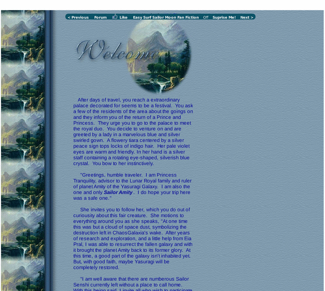

Previewing: A Galaxy Resurrected, Yasuragi Previewing: A Galaxy Resurrected, Yasuragi 
Use the left/right red arrow controls to navigate through this ring - Click the preview image to visit the member site.

A Portal to a Original Sailor Moon RPG
A Galaxy Resurrected, Yasuragi owned by:
 yasuragirealm yasuragirealm
A member of the original webring since 07/04/2004.
|
|